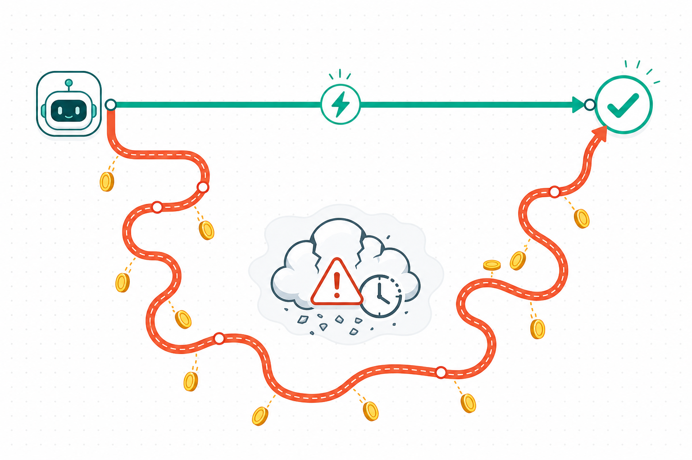

PyCon Indonesia 2026

Federated
Federated
by Default
Building Agent Data Pipelines Without ETL
Auxten Wang · ClickHouse · Creator of chDB@auxten

Auxten Wang
@auxten · auxten.com
Technical Director @ ClickHouse
Creator of chDB — acquired by ClickHouse in 2024
Builds embedded databases & agent data tooling
Ex-Shopee · CovenantSQL · Baidu · Qihoo 360
You're building a support agent
@tool get_orders(user_id) # spend history
@tool get_customer(user_id) # who is this?
@tool get_tickets(today) # what's hot?
Every tool call is a
data question.
data question.
Three answers. Three worlds. Zero reach.
CLOUD
orders.parquet · on S3
5,000 rows · never loaded
5,000 rows · never loaded
ARCHIVE
crm_exports.tar
users_*.csv trapped inside
users_*.csv trapped inside
PROCESS RAM
tickets DataFrame
fetched from the API just now
fetched from the API just now
YOUR AGENT
[ • • ] so… where's the data?
The reflex: build a pipeline first
ETL — Extract → Transform → Load into a warehouse. Then query.

ETL assumes questions are known in advance
refreshes nightly — agents need answers now
pays off over years — agents ask once
You can't pre-build a pipeline for a question
nobody has asked yet.
nobody has asked yet.
Flip the default: query data where it lives
CLOUD
url('…/orders.parquet')
ARCHIVE
file('…tar :: *.csv')
PROCESS RAM
Python(tickets)
chDB engine
inside your Python process
one SQL · written at ask-time
chDB: a rocket engine on a bicycle

# pip install chdb
import chdb
chdb.query("SELECT count()
FROM file('orders.parquet')")
# schema inferred · nothing loaded
import chdb
chdb.query("SELECT count()
FROM file('orders.parquet')")
# schema inferred · nothing loaded
The ClickHouse engine, in-process — like SQLite
No server, no config, no connection string
Schema on read — point at a file and query
Same engine that runs analytics at Anthropic, Cursor, Vercel, Cloudflare.
One function per place your data lives
file()
60+ formats · tar & glob
s3() / url()
lakes & HTTP endpoints
postgresql()
live DBs, queried in place
Python()
the DataFrame in RAM
SELECT type, round(avg(price)) AS avg_price
FROM s3('https://…/house_0.parquet')
GROUP BY type ORDER BY avg_price DESC
-- detached 286,753 · flat 198,888 · terraced 157,110
FROM s3('https://…/house_0.parquet')
GROUP BY type ORDER BY avg_price DESC
-- detached 286,753 · flat 198,888 · terraced 157,110
2.77M rows of UK housing,
queried where they sit.
queried where they sit.
Ran live during prep — real output, not a mockup.
The whole talk in one query
CLOUD
url('…/orders.parquet')
ARCHIVE
crm_exports.tar :: *.csv
PROCESS RAM
Python(tickets)
SELECT name, tier, subject, sum(amount) AS spend
FROM Python(tickets)
JOIN file('crm_exports.tar :: users_*.csv') USING …
JOIN url('https://auxten.com/…/orders.parquet') USING …
GROUP BY name, tier, subject ORDER BY spend DESC
No warehouse.
No load step.
The pipeline is the query.
No load step.
The pipeline is the query.
…and yes: it read the CSVs inside the tar. No unzip.
→ user_58 · pro · api limits · 3,716 (measured output)
Give the agent one data tool
@tool
def run_sql(query: str) -> str:
"""Files, S3, archives, DataFrames —
one SQL surface for all of it."""
return chdb.query(query, "CSV")
def run_sql(query: str) -> str:
"""Files, S3, archives, DataFrames —
one SQL surface for all of it."""
return chdb.query(query, "CSV")
Which of today's tickets are from our biggest customers?
Querying all three sources…SELECT … FROM Python(tickets) JOIN file('…tar…') JOIN url('…parquet…')
user_58 (pro) and user_3 (enterprise) top the list — refund & API-limit tickets.
Where it runs: a MicroVM per session

chDB: the only data-infra launch partner of AWS Lambda MicroVMs
spin up — agent + private chDB
federate S3 / DBs in place
answer, then suspend
The network is not free
~60 s
remote aggregation over the 2.77M-row Parquet on S3
1 line
of SQL to materialize it into a local table
19 ms
the same aggregation, after caching locally
-- when a remote path gets hot, cache it — once:
CREATE TABLE hot_orders ENGINE = MergeTree ORDER BY tuple()
AS SELECT * FROM s3('https://…/orders/*.parquet');
CREATE TABLE hot_orders ENGINE = MergeTree ORDER BY tuple()
AS SELECT * FROM s3('https://…/orders/*.parquet');
Three takeaways
01
Agents ask unpredictable questions. Query data where it lives — don't pre-build pipelines.
02
One SQL surface is the agent's data tool. Files, lakes, archives, DataFrames — federated in-process.
03
Materialize only what gets hot. ETL becomes a one-line optimization, not a prerequisite.
S3 is where your data lives. chDB is how your agent reaches it. Lambda is where it thinks.
Terima kasih!
Thank you.
pip install chdb
github.com/chdb-io/chdb
clickhouse.com/docs/chdb
auxten.com — slides & verified demos
Q&A
Auxten Wang · ClickHouse · Creator of chDB@auxten